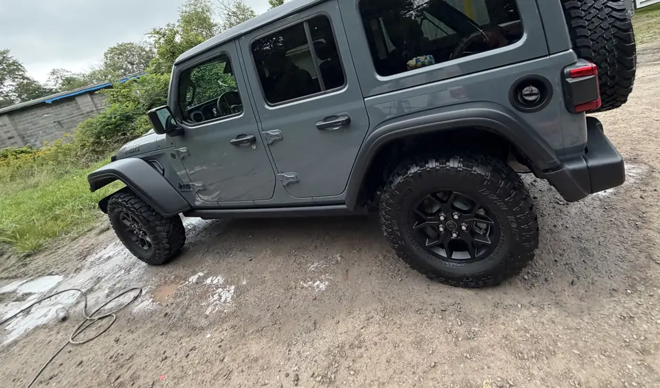
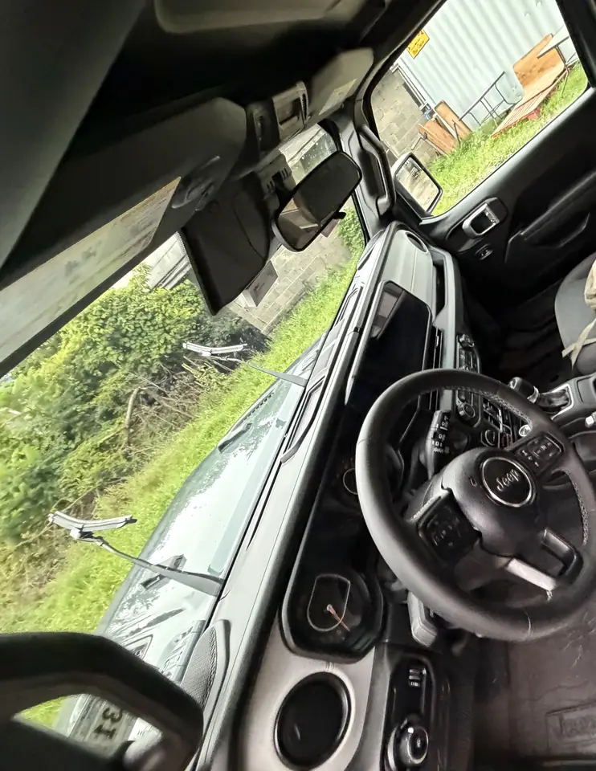

Visit day
What Is Mobile Car Detailing and What Should You Expect?
A technician comes to your location. What we do depends on the package you selected. You provide vehicle access and any site notes from booking. We bring water and power when the location allows safe staging. A request is not a confirmed appointment.
The technician comes to you
Mobile car detailing is professional work at a driveway, office lot, marina, storage site, or another place that can host it safely. You are not sitting in a tunnel. The tradeoff is space and a real block of time on the calendar.

Before the visit
Online booking is a request. We review location, vehicle condition, service type, weather, access, and availability, then send a separate confirmation. No card is required to send the request. After review you can pay online in My Garage or at service when those options are available.
Tell us constraints up front: tight urban parking, HOA rules, a blocked driveway, apartment-lot vendor rules. If the site will not work, we would rather say so before anyone drives.
Arrival window and location
Windows are estimates. Traffic, a prior job running long, or access issues can shift them. Keep the vehicle reachable, unlocked as agreed, and free of valuables you do not want moved. Someone with keys or app access should be reachable even if they are not standing outside the whole time.
Package scope and add-ons
We do the work on the selected package — not a generic “full detail” if you booked maintenance. Photos and notes help. On site, pet hair, stains, oxidation, or odor may need add-ons or a revised total. You will hear about a significant price change before we proceed. Some conditions may be declined or quoted separately.
If you are deciding between a rinse and a real interior, read car wash vs. car detailing first so the package matches the car.

Weather and site limits
Heavy rain, freezing conditions, extreme heat, or unsafe footing can move the day. When Cardetail1 reschedules for weather or safety, no cancellation fee applies. Late customer cancellations and no-shows follow the terms.
After service
Service photos may be taken to document pre-existing damage and finished work, as described in the booking terms. Final payment is typically collected after the job unless the booking already used Pay Online in My Garage. Saving a card, when you choose that separate flow, does not by itself create a charge.
My Garage is where you look up the request, balances, and updates once it is in the system.
Related questions
What is mobile car detailing?
The technician comes to your location — home, office, or another approved site — instead of you driving to a shop or tunnel. Cardetail1 brings water and power when the location allows safe staging.
How does mobile detailing work?
You send a request with the vehicle, ZIP, and package. We review access, condition, weather, and availability, then confirm separately. On the day, we stage at the vehicle, complete the selected work, and you pay after service unless you already used Pay Online in My Garage.
How long does mobile detailing take?
Interior-only visits are often a few hours. Full details take longer. Size, soil, pet hair, and add-ons change the window. We share a realistic arrival window when the request is reviewed.
Do I need to be home for mobile detailing?
Someone needs to provide vehicle access and stay reachable. You do not have to watch the entire job. Keys or app access and a way to reach you if weather or condition questions come up are enough.
Does mobile detailing require water or electricity?
No. Water and power access are optional planning notes. We bring our own water and power whenever the location allows safe staging.
What if the weather is bad?
Unsafe rain, freezing conditions, or poor footing can require a reschedule. When Cardetail1 moves a visit for weather or safety, no cancellation fee applies. We will contact you to pick a new window.
Is my booking confirmed when I submit the form?
No. Online booking is a request. It does not confirm the appointment by itself. No card is required to send the request. Confirmation comes after review.